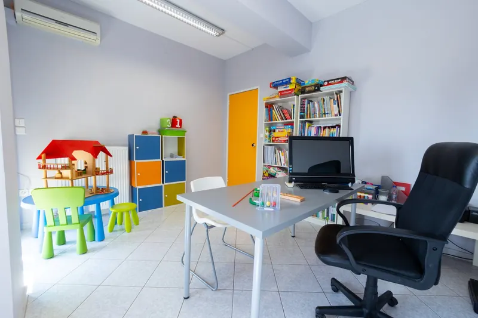
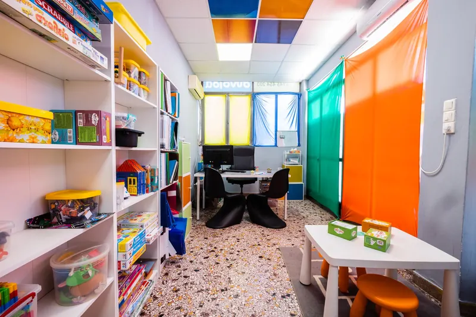

Λογοθεραπεία
Αξιολόγηση και παρέμβαση σε δυσκολίες λόγου, ομιλίας και επικοινωνίας για παιδιά και εφήβους.
Πότε χρειάζεται αξιολόγησηΤι είναι η λογοθεραπεία
Η λογοθεραπεία αφορά την αξιολόγηση και την αντιμετώπιση δυσκολιών στην ομιλία, στην κατανόηση και έκφραση του λόγου και στην επικοινωνία.
Ο λογοθεραπευτής αξιολογεί τις γλωσσικές και επικοινωνιακές δεξιότητες του παιδιού και εντοπίζει τους τομείς που χρειάζονται υποστήριξη. Με βάση τα ευρήματα, διαμορφώνεται εξατομικευμένο πρόγραμμα παρέμβασης.
Πώς γίνεται η αξιολόγηση
Πότε να απευθυνθείτε σε λογοθεραπευτή
Μπορείτε να ζητήσετε αξιολόγηση όταν παρατηρείτε δυσκολίες στην ομιλία, στον λόγο ή στην επικοινωνία του παιδιού, όπως οι παρακάτω.
Οι παρατηρήσεις αυτές αξιολογούνται σε σχέση με την ηλικία και τη συνολική ανάπτυξη του παιδιού. Μεμονωμένα δεν αποτελούν διάγνωση.
Αναγνωρίζετε κάτι από αυτά; Ζητήστε μια πρώτη συνάντησηΔυσκολία στην καθαρή ομιλία
Οι άλλοι δυσκολεύονται να καταλάβουν τι λέει ή δεν μπορεί να πει ορισμένους ήχους.
Δυσκολίες στην κατανόηση και έκφραση
Δυσκολεύεται να κατανοήσει οδηγίες, να σχηματίσει προτάσεις ή να περιγράψει ένα γεγονός.
Δυσκολίες στη ροή της ομιλίας
Παρατηρείτε επαναλήψεις, παρατάσεις ήχων, μπλοκαρίσματα ή αυξημένη προσπάθεια κατά την ομιλία.
Δυσκολίες στην κοινωνική επικοινωνία
Δυσκολεύεται να συμμετέχει σε διάλογο, να εκφράσει τις ανάγκες του ή να επικοινωνήσει κατά το παιχνίδι με άλλα παιδιά.
Τομείς λογοθεραπευτικής παρέμβασης
Οι στόχοι καθορίζονται από τα ευρήματα της αξιολόγησης. Ανάλογα με τις ανάγκες του παιδιού, το πρόγραμμα μπορεί να περιλαμβάνει έναν ή περισσότερους από τους παρακάτω τομείς.
Άρθρωση και φωνολογία
Παραγωγή και οργάνωση των ήχων της ομιλίας, με στόχο τη σαφέστερη εκφορά λέξεων και τη χρήση των δεξιοτήτων στον αυθόρμητο λόγο.
Κατανόηση και έκφραση του λόγου
Ανάπτυξη λεξιλογίου, γραμματικής και σύνταξης, κατανόηση οδηγιών και οργάνωση της αφήγησης.
Κοινωνική και μη λεκτική επικοινωνία
Συμμετοχή σε διάλογο και αλληλεπίδραση, έκφραση αναγκών και προσαρμογή του λόγου στην περίσταση. Αξιοποιούνται λέξεις, χειρονομίες ή άλλα μέσα επικοινωνίας, ανάλογα με το παιδί.
Ροή της ομιλίας
Αξιολόγηση και παρέμβαση σε δυσκολίες ροής, όπως ο τραυλισμός. Οι στόχοι λαμβάνουν υπόψη τόσο την ομιλία όσο και την επίδραση των δυσκολιών στη συμμετοχή του παιδιού.
Φωνολογική ενημερότητα και γραπτός λόγος
Αναγνώριση και χειρισμός συλλαβών και ήχων της γλώσσας, καθώς και γλωσσικές δεξιότητες που σχετίζονται με την ανάγνωση και τη γραφή. Όπου χρειάζεται, υπάρχει συνεργασία με την ειδική αγωγή.

Πώς οργανώνεται η παρέμβαση
Αρχική αξιολόγηση
Λαμβάνουμε το ιστορικό, συζητάμε τις παρατηρήσεις σας και αξιολογούμε τον λόγο, την ομιλία και την επικοινωνία του παιδιού.
Εξατομικευμένο πρόγραμμα
Καθορίζουμε συγκεκριμένους θεραπευτικούς στόχους. Οι δραστηριότητες και το υλικό επιλέγονται ανάλογα με την ηλικία, τις δεξιότητες και τα ενδιαφέροντα του παιδιού.
Συνεργασία με την οικογένεια
Ενημερώνουμε για την πορεία και συζητάμε πρακτικές οδηγίες για το σπίτι. Οι στόχοι επανεξετάζονται με βάση την πρόοδο του παιδιού και τις παρατηρήσεις της οικογένειας.
Συχνές ερωτήσεις
Στην πρώτη συνάντηση έρχεται και το παιδί;
Αρχικά έρχεται μόνο ο γονέας. Συζητάμε όσα σας απασχολούν και το ιστορικό του παιδιού, και σας εξηγούμε πώς θα προχωρήσει η αξιολόγηση.
Η αξιολόγηση σημαίνει ότι θα ξεκινήσουμε συνεδρίες;
Όχι απαραίτητα. Πρώτα γίνεται η αξιολόγηση και μετά προτείνουμε αν και τι υποστήριξη χρειάζεται. Συζητάμε μαζί σας τα ευρήματα και τα επόμενα βήματα, ανάλογα με τις ανάγκες που προκύπτουν.
Πόσο συχνά και για πόσο διάστημα γίνεται η λογοθεραπεία;
Συνήθως μία ή δύο συνεδρίες των 45 λεπτών την εβδομάδα. Η διάρκεια εξαρτάται από τους στόχους και την πορεία του παιδιού. Κάθε 6 μήνες παίρνετε γραπτή αναφορά προόδου και επανεξετάζουμε μαζί αν συνεχίζουμε, αν αλλάζουμε στόχους ή αν ολοκληρώνουμε.
Προγραμματίστε μια πρώτη συνάντηση
Επικοινωνήστε με το κέντρο που σας εξυπηρετεί για πληροφορίες σχετικά με τη λογοθεραπευτική αξιολόγηση.
Επικοινωνήστε μαζί μαςΑρτέμιδα · Σπάτα · Νέα Μάκρη · Μαραθώνας
Όλες οι θεραπείες